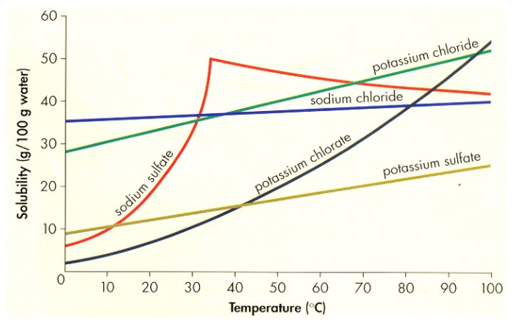

Crossword
- Proton acceptor:
- The ability to form hydrogen bonds between molecules (water sticking to water):
- A solution with less dissolved solute than a saturated solution:
- A substance capable of dissolving a solute:
- The formula for hydrochloric acid:
- Has both polar and non-polar regions:
- Water loving:
- Uneven distribution of charge:
- Bonds created when pairs of electrons are shared between atoms:
- In water, the ability to stick to other substances:
- A solid that forms when 2 solutions mix:
- The formula for sodium hydroxide:
- A solution with more dissolved solute than a saturated solution:
- How much space a certain number of atoms takes up:
- Water fearing:
- A solution with the maximum amount of dissolved solute:
- Proton donor:
- The amount of a substance that can dissolve in a fixed volume of solvent:
- Indication of how acidic or alkaline a solution is:
Practice Test Questions
- Describe the structure of water, including covalent bonding.
- Describe the properties of water.
- Water is a polar molecule. What does this mean?
- Describe the properties of a liquid with a high "wetting ability".
- One oxygen atom covalently bonded to two hydrogen atoms (it shares one electron pair with each). The molecule is bent (about 104.5°) because of oxygen's two lone pairs.
- Polar; forms hydrogen bonds; the universal solvent; high surface tension (cohesion); adhesion; less dense as a solid (ice floats); high specific heat capacity; boils at 100 °C and freezes at 0 °C.
- It has an uneven charge distribution: the oxygen end is slightly negative (δ−) and the hydrogen ends slightly positive (δ+).
- Low surface tension: it spreads out across a surface rather than forming droplets, because its attraction to the surface (adhesion) is stronger than its cohesion.
- A liquid that is soluble in water is .
- A liquid soluble in alcohol (but not water) is .
Describe the properties of acids and alkalis.
Acids: sour; turn litmus red; pH below 7; corrosive; release H⁺ ions (proton donors); react with metals, bases and carbonates. Alkalis: bitter; turn litmus blue; pH above 7; soapy/slippery; caustic; release OH⁻ ions (proton acceptors); neutralise acids.
| Name | Formula |
|---|---|
| Hydrochloric acid | |
| NaOH | |
| H3PO4 | |
| Potassium hydroxide | |
| Sulfuric acid |
- Acid + base →
- Acid + metal carbonate →
- Acid + metal hydroxide →
- Acid + metal oxide →
Complete and balance:
- HNO3 + Mg; b. H2SO4 + CuCO3; c. HCl + Fe2O3; d. H3PO4 + Al(OH)3
- 2HNO₃ + Mg → Mg(NO₃)₂ + H₂
- H₂SO₄ + CuCO₃ → CuSO₄ + H₂O + CO₂
- 6HCl + Fe₂O₃ → 2FeCl₃ + 3H₂O
- H₃PO₄ + Al(OH)₃ → AlPO₄ + 3H₂O
- Na2CO3:
- AgCl:
- (NH4)3PO4:
- BaS:
- MgSO4:
Sulfides aren't in the solubility table; Group 1 and Group 2 sulfides such as BaS dissolve (reacting with the water), while most other sulfides are insoluble.

At 50 °C, which salt is the least soluble?
At 50 °C potassium sulfate dissolves about 17 g per 100 g of water, just below potassium chlorate (about 19 g).
At what temperature does 40 g of potassium chloride dissolve in 100 mL of water?
What mass of potassium chlorate must be added to 200 mL of water to make a saturated solution at 50 °C?
About 19 g dissolves per 100 mL at 50 °C, so 200 mL needs about 2 × 19 = 38 g.
75 mL of a saturated solution of potassium sulfate is cooled from 80 °C to 40 °C. What mass crystallises out?
Per 100 g: about 22 g at 80 °C and about 15 g at 40 °C, so 7 g. For 75 mL: 0.75 × 7 ≈ 5 g.
- KCl + Cu(NO3)2:
- NH4OH + MgBr2:
- FeSO4 + BaCl2:
- CaCl2 + Li2CO3:
- Sodium:
- Lithium:
- Copper(II):
- Barium:
What tests would identify these unknowns? a. CuCl2; b. FeCO3; c. NaNO3
- Cu²⁺: blue-green flame; NaOH gives a light blue precipitate. Cl⁻: dilute HNO₃ then AgNO₃ gives a white precipitate.
- Fe²⁺: NaOH gives a green precipitate; K₃Fe(CN)₆ gives dark blue. CO₃²⁻: HCl makes it fizz; the gas turns limewater milky.
- Na⁺: no precipitate with NaOH; yellow-orange flame. NO₃⁻: no precipitate with AgNO₃ or with acidified BaCl₂ (identified by elimination).
Appendix: important formulas
The full table of ion charges is in the valency table.
| Formula | Common name |
|---|---|
| H2O | |
| CO2 | |
| HCl | |
| H2SO4 | |
| HNO3 | |
| NaOH | |
| CaCO3 | |
| NH3 | |
| CaO | |
| O2 | |
| N2 | |
| H2 | |
| Cl2 |